모덕후 ② 뽀뽀 — 잡지 화보 패러디 — 그림 확인 (23장)
결과(왼쪽)를 첨부한 기준 그림과 비교한다: 얼굴 · 머리 · 옷 · 피부 톤 · 선 굵기 · 과장 정도. 판정은 content/mk02-kiss/prompts/jobs/review.json 에 "id": "ok" 또는 "redo: 이유" 로 적는다.
아빠 — 기본 common/dad/normal 확인 전
 결과①
결과① 화풍 앵커
화풍 앵커아빠 — 충격 common/dad/shock 확인 전
아빠 — 당황 common/dad/panic 확인 전
아빠 — 생각 common/dad/think 확인 전
엄마 — 기본 common/mom/normal 확인 전
 결과①화풍 앵커②
결과①화풍 앵커② 채널 프로필 — 오른쪽 위 안경 쓴 여자가 엄마③
채널 프로필 — 오른쪽 위 안경 쓴 여자가 엄마③ 채널 배너 — 맨 오른쪽 팔짱 낀 여자가 엄마
채널 배너 — 맨 오른쪽 팔짱 낀 여자가 엄마컷인 — 아빠 충격 common/cutin/dad-shock 확인 전
모덕후 삼촌 — 기본 (진지) (1편 그림 복사, 새로 안 뽑음) modeokhu/normal 확인 전
 결과①화풍 앵커
결과①화풍 앵커모덕후 삼촌 — 레이저 포인터로 가리키며 "자, 진지하다" (1편 그림 복사, 새로 안 뽑음) modeokhu/point 확인 전
모덕후 삼촌 — 결론, 팔짱 끼고 의기양양 (1편 그림 복사, 새로 안 뽑음) modeokhu/proud 확인 전
결과①화풍 앵커②같은 사람 유지용 기준 그림
모덕후 삼촌 컷인 — 안경 번쩍 (1편 그림 복사, 새로 안 뽑음) cutin/uncle-glint 확인 전
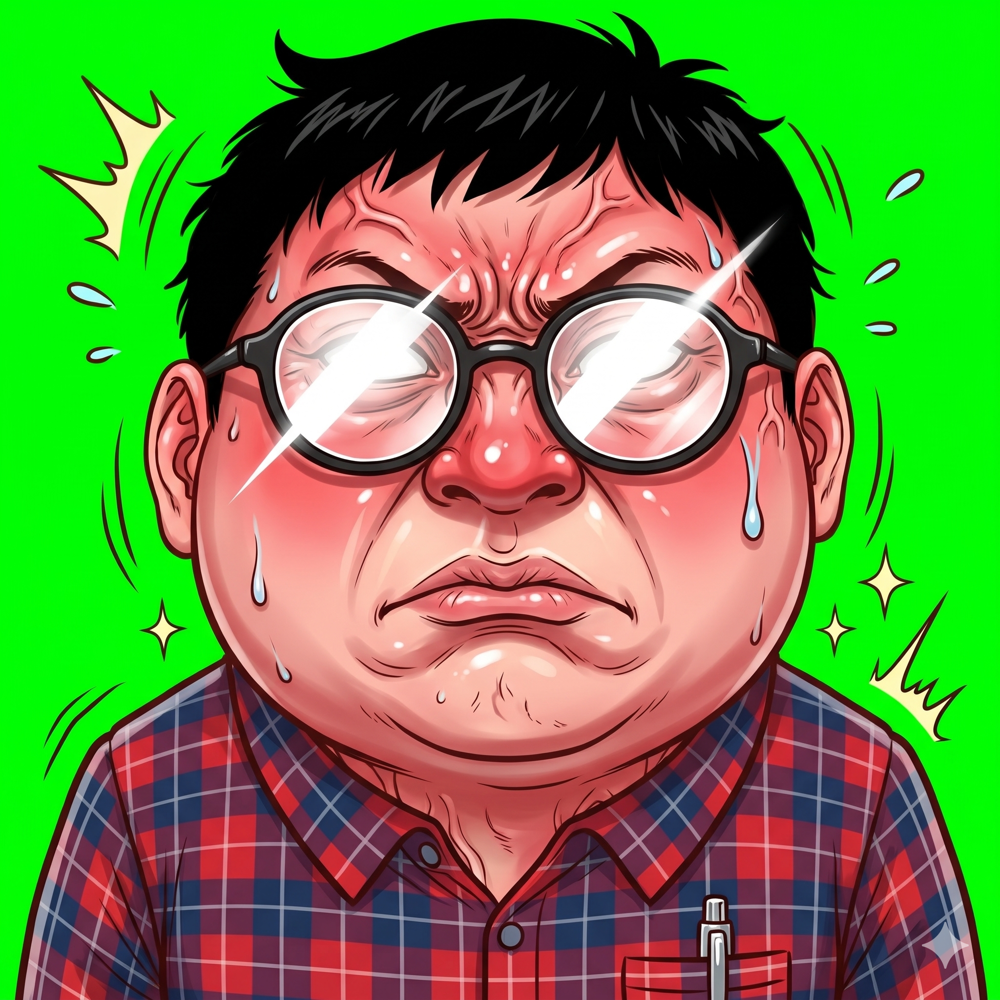
결과①화풍 앵커②같은 사람 유지용 기준 그림삼촌 컷인 — 꿀꺽 (김 서린 안경 · 빨개진 볼) cutin/uncle-gulp 확인 전
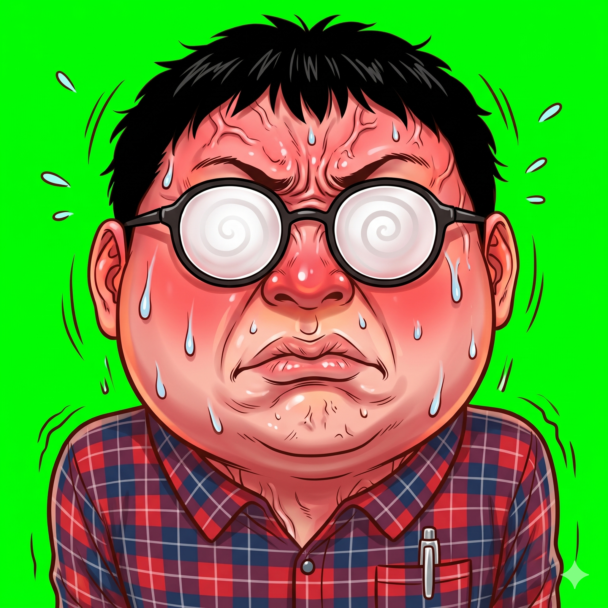
결과①화풍 앵커②같은 사람 유지용 기준 그림삼촌 — "…논문으로." 시선 피하며 안경 고쳐 쓰기 modeokhu/fluster 확인 전
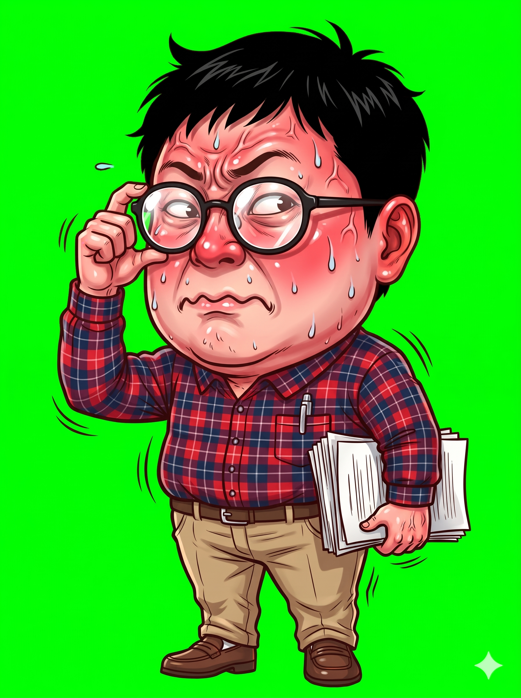
결과①화풍 앵커②같은 사람 유지용 기준 그림배경 — 삼촌의 밤 원룸 (책 더미 · 피규어 · 컵라면 · TV 불빛) bg/oneroom 확인 전
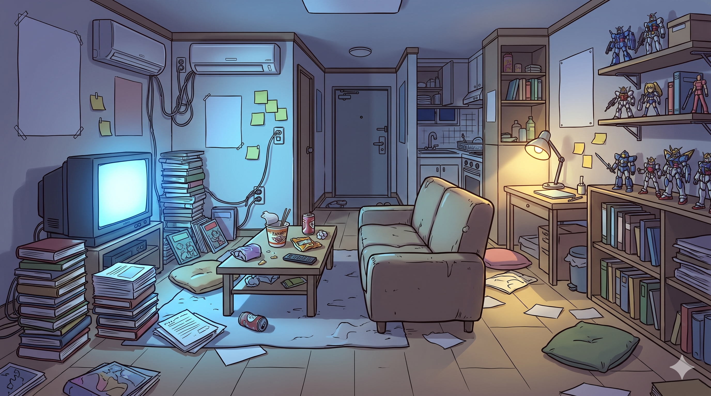
결과①화풍 앵커드라마 패러디 — 소파의 삼촌 뒷모습 너머 TV 속 노을 키스신 (실루엣 · 하트 모자이크) full/tv-drama 확인 전
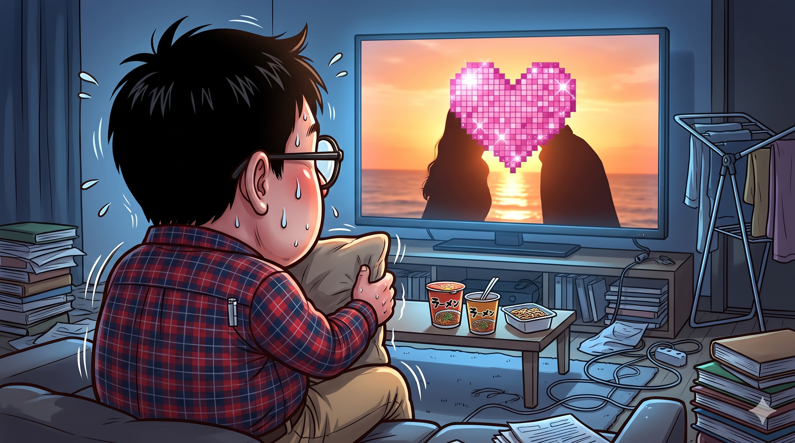
결과①화풍 앵커②같이 나오는 사람 기준 그림 (normal)과학 잡지 표지 패러디 — 입술 · 손이 거대한 감각 호문쿨루스 full/homunculus-cover 확인 전
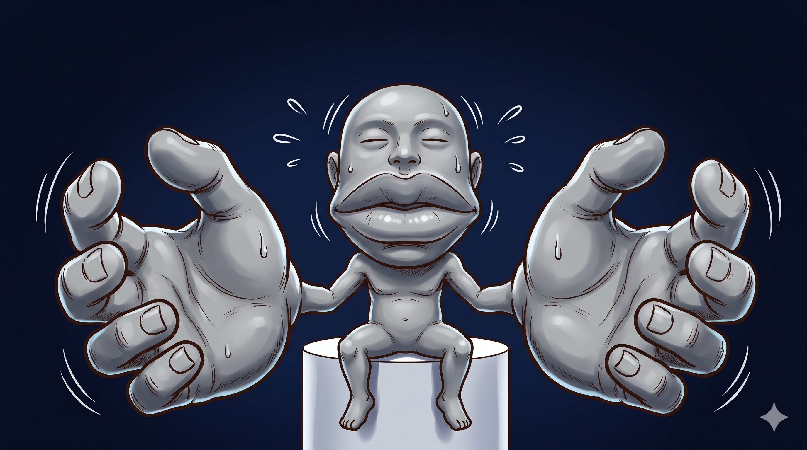
결과①화풍 앵커립스틱 광고 패러디 — 빨간 입술 모형 단면 도해 (얇은 겉층 · 비치는 모세혈관) full/lipstick-ad 확인 전
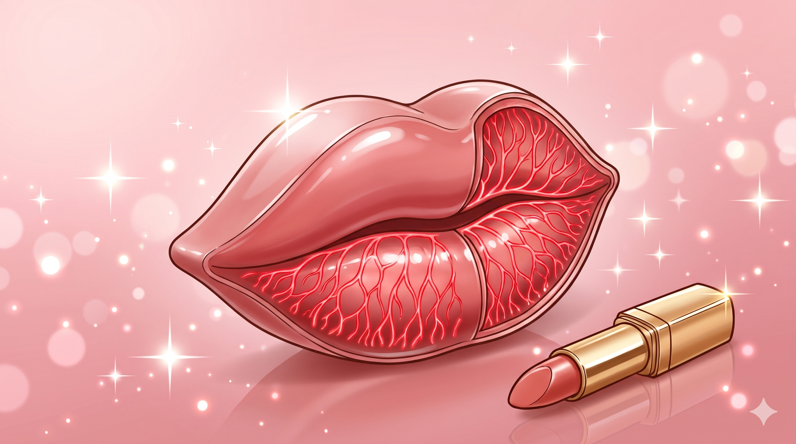
결과①화풍 앵커학교 보건실 — 분위기 0점의 실험실 full/health-room 확인 전
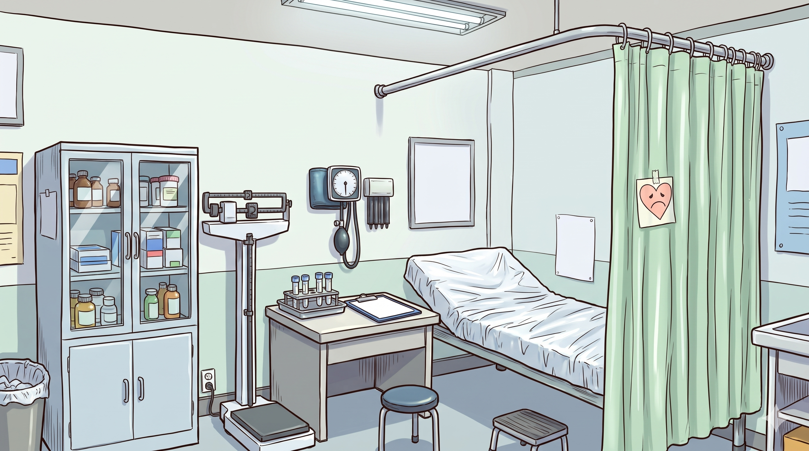
결과①화풍 앵커와인 시음 화보 패러디 — 소믈리에 삼촌이 잔마다 ✕ full/sommelier 확인 전
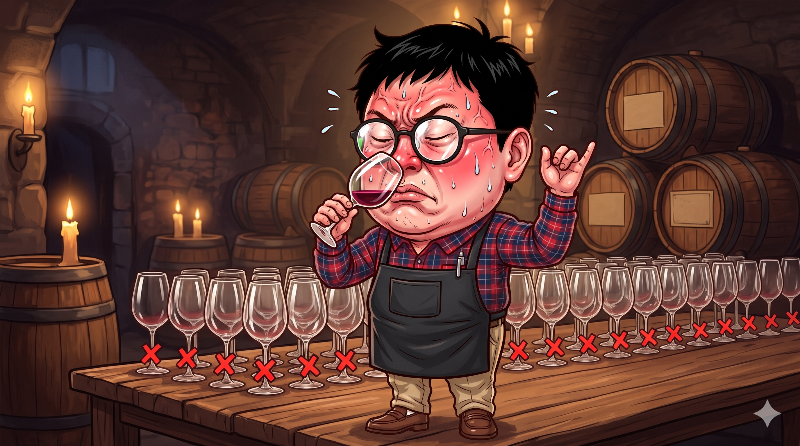
결과①화풍 앵커②같이 나오는 사람 기준 그림 (normal)박물관 계통도 패러디 — 가지마다 입 맞추는 유인원들 full/ape-tree 확인 전
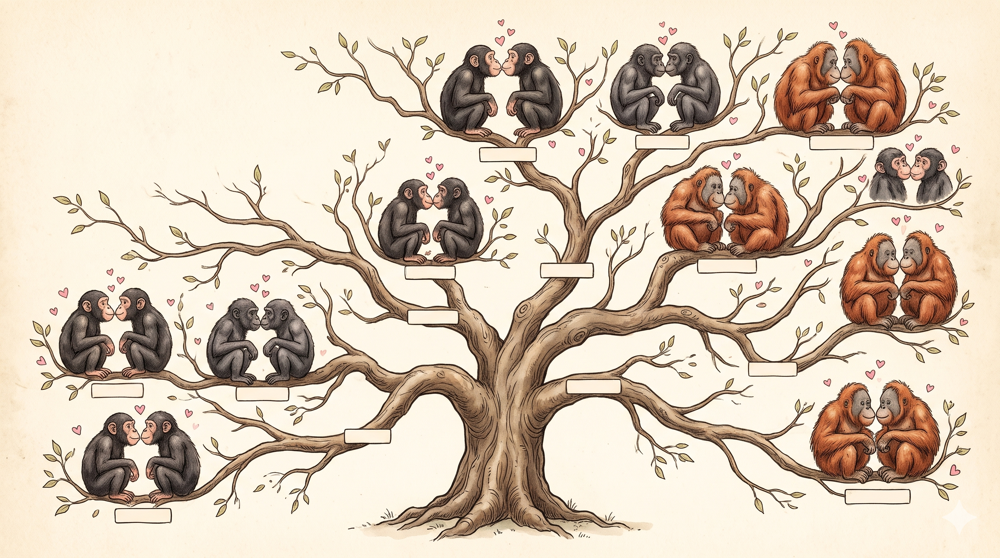
결과①화풍 앵커지도 화보 — 하트 핀 절반, 회색 핀 절반 full/world-map 확인 전
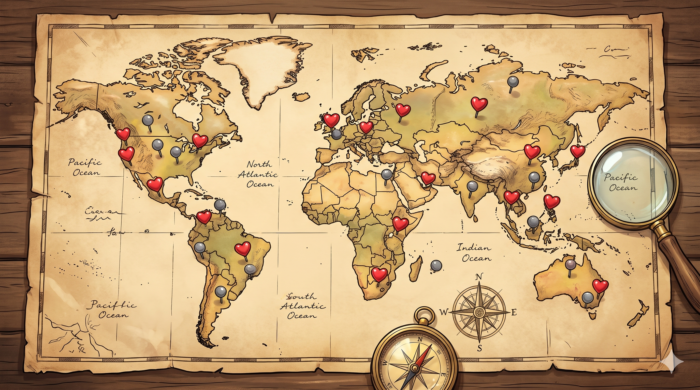
결과①화풍 앵커현미경 화보 패러디 — 하트 다리를 건너 이사 가는 세균 떼 full/microbe 확인 전
결과①화풍 앵커
현관 — 엄마가 아빠 볼에 쪽, 문틈의 삼촌 꿀꺽 full/cheek-kiss 확인 전
소품 — 화보처럼 빛나는 빨간 입술 젤리 prop/lips 확인 전
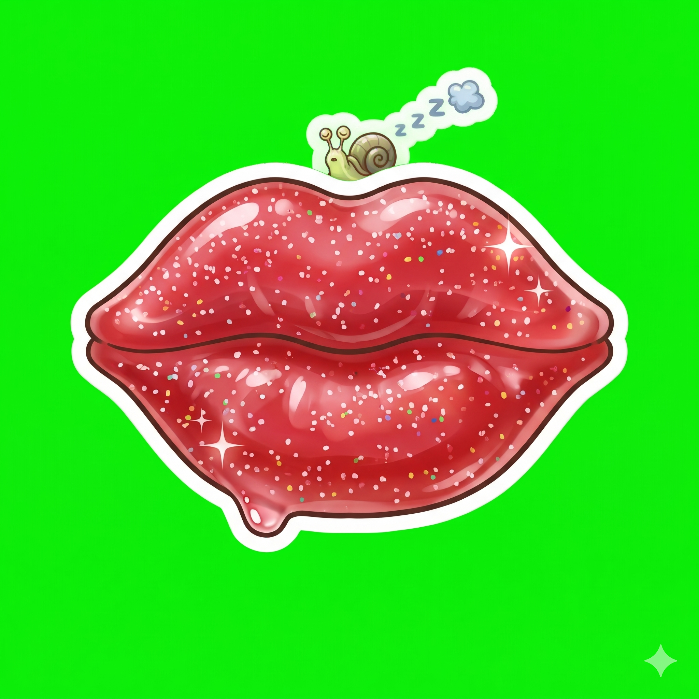
결과① 소품 화풍 앵커 (사람 없는 소품)
소품 화풍 앵커 (사람 없는 소품)